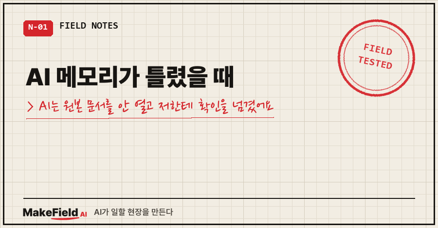
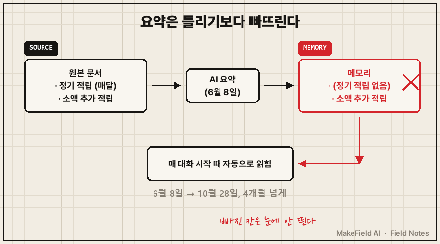
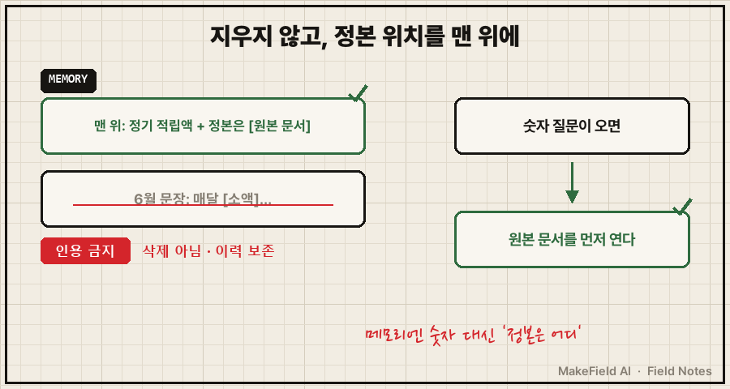
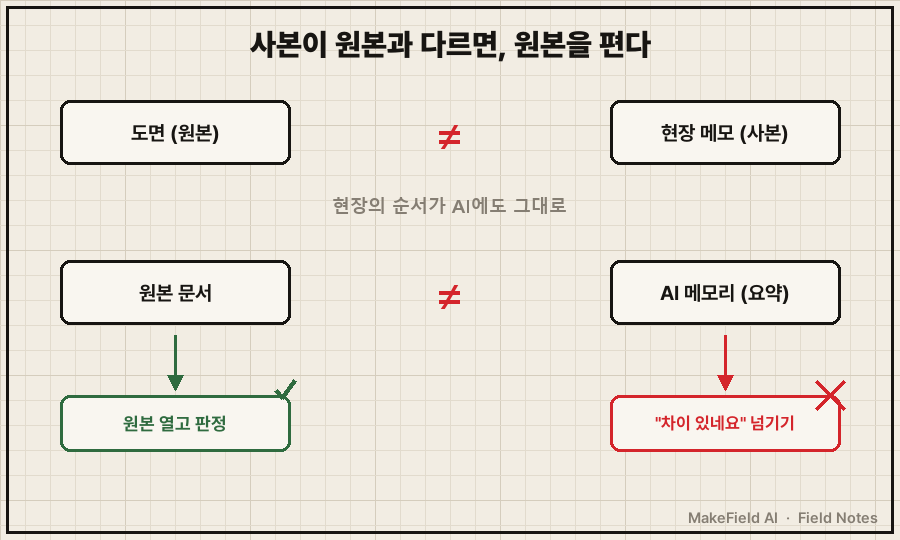

AI 비서 메모리에 저장된 내용, 마지막으로 직접 열어 본 게 언제세요?
저는 열어 볼 생각도 안 하고 4개월을 지냈어요.
결론부터 적습니다. AI 메모리가 틀렸을 때 제일 먼저 할 일은 '지금 한 말'과 '메모리' 중 하나를 고르는 게 아니라, 둘 다 아닌 원본 문서를 여는 것입니다. 제 경우 매달 넣는 적립 금액이 메모리에 자릿수 하나 적게 들어가 있었고, 원본 문서에는 처음부터 맞는 금액이 적혀 있었어요. 틀린 건 원본이 아니라 AI가 만든 요약이었습니다.
현장에서 15년 일하면서 몸에 밴 습관이 하나 있어요. 현장 메모랑 도면이 다르면, 메모를 믿지 말고 도면을 펴 보는 거요. 이번 글은 그 당연한 순서를 AI가 건너뛰었다가, 결국 제가 판정까지 떠안을 뻔한 이야기예요.
1. 메모리엔 "매달 [소액]"이라고만 남아 있었어요
6월 8일, AI가 제 투자 습관을 메모리에 정리했어요. 메모리는 대화가 시작될 때마다 AI가 자동으로 읽는 요약 노트입니다.
그날 정리된 문장은 대략 이랬어요(금액만 바꿔 적었습니다).
절약으로 만든 진짜 여유분 [소액](약 1주)은
매달 빠지지 않고 넣는다.빠진 게 있었어요. 정작 매달 꼬박꼬박 넣는 정기 적립이 통째로 없었습니다.
그리고 이 메모리는 "투자 철학"이라는 이름으로 그날부터 10월 28일까지, 4개월 넘게 매 대화 시작 때마다 읽혔어요.

AI가 이 문장을 어디서 가져왔는지는 지금도 몰라요. 6월 대화 원문을 대화 기록과 작업 이력에서 찾아봤는데 끝내 못 찾았습니다. 그래서 이 부분은 미확인으로 남겨 둡니다.
2. AI가 차이를 발견하고 한 일, "사실 차이"라는 보고 한 줄
10월 28일, AI와 제 목표·원칙을 다시 정리하다가 제가 이렇게 말했어요.
"돈이 모자라도 [정기 적립액]은 무조건 꾸준히 넣는다."
AI는 메모리와 제 말이 다르다는 걸 알아챘어요. 거기까지는 좋았는데, 보고가 이랬습니다.
⚠ 사실 차이: 투자 메모리(6월) "월 [소액]" vs 오늘 발언 "[정기 적립액]"
→ 최신 우선 기록, 이전 보존원본 문서는 열지 않았어요.
차이를 적어 두고, 최신 발언을 우선으로 하고, 판단은 저한테 넘긴 거죠.
3. "이런 오류도 하는데 내가 믿고 쓰겠나?"
그 보고를 받고 제가 보낸 답장이에요. 원문 그대로입니다(금액·상품명은 가리고, 금액을 다시 적은 마지막 한 줄은 뺐어요).
그리고 [적립 상품] 적립은 매달 [정기 적립액]이다.
[소액]은 도대체 무슨 오타인가? 시스템 오류인거 같은데?
이런 오류도 하는게? 그럼 신뢰성이 부족한데 내가 믿고 쓰겠나?
.... 안타깝네 진짜그제야 AI가 원인을 추적했어요. 투자 규칙을 적어 둔 원본 문서의 납입 계획 표를 열어 보니, 9월까지도, 10월 이후도 정기 적립액이 맞게 적혀 있었습니다.
원본은 처음부터 맞았어요. 메모리만 틀렸던 거죠.
AI 작업 기록에도 이렇게 남았어요(이름만 바꿨어요).
잘못: 직전 보고에서 정본을 대조하지 않고
"사실 차이"로 [사용자]에게 넘김실수는 두 개였어요.
하나는 요약하면서 정기 적립을 빠뜨린 것.
또 하나는 차이를 발견하고도 원본을 안 열고 확인을 떠넘긴 것.
저는 두 번째가 더 아팠어요. 첫 번째는 요약하다 보면 생길 수 있는 일인데, 두 번째는 순서를 몰라서 생긴 일이거든요.
4. AI 메모리가 틀렸을 때, 어떻게 고쳤나
틀린 줄은 지우지 않았어요. 지우면 나중에 "왜 이 숫자가 바뀌었지?"를 아무도 설명 못 하니까요.
| 했어야 할 순서 | AI가 실제로 한 것 | 고친 뒤 |
|---|---|---|
| ① 메모리와 새 말이 다르다 발견 | 발견함 | 동일 |
| ② 원본 문서를 연다 | 건너뜀 | 원본 먼저 대조 |
| ③ 원본 기준으로 판정 | "최신 우선"으로 사람에게 넘김 | 원본 수치로 판정 |
| ④ 틀린 기록 처리 | 이전 문장 그대로 보존 | 지우지 않고 "인용 금지" 표시 |
| ⑤ 재발 방지 | 없음 | 메모리 맨 위에 정본 수치 + 정본 위치 |

실제로 메모리 안의 틀린 문장 앞에는 이런 표시가 붙었어요(금액·파일명만 바꿨어요).
⛔[10-28 [사용자] 부정 — "[소액]은 도대체 무슨 오타인가".
대화 원문 미확인, 근거로 인용 금지.
실제 정기 적립=월 [정기 적립액](정본 [규칙 문서] 납입 로드맵)]그리고 메모리 맨 위에는 정기 적립액과 "정본은 어느 문서"를 적었습니다. 이제 숫자를 물으면 AI는 메모리가 아니라 그 문서를 가리키게 돼 있어요.
5. 메모리는 원본이 아니라 '내가 안 쓴 요약'이에요
Claude Code 공식 문서에도 이런 문장이 있어요. "Auto memory lets Claude accumulate knowledge across sessions without you writing anything." 내가 아무것도 안 써도 AI가 세션을 넘나들며 지식을 쌓는다는 뜻입니다. (code.claude.com/docs/en/memory, 2026-10-29 확인)
편한 기능인데, 뒤집어 말하면 내가 쓰지 않은 요약이 매번 읽힌다는 얘기예요. 요약은 틀리기보다 빠뜨리기가 쉽고, 빠진 건 눈에 잘 안 띕니다. 저도 4개월 동안 몰랐으니까요.

제가 바꾼 건 세 가지예요.
- 중요한 숫자(금액·날짜·횟수)는 메모리가 아니라 원본 문서 한 곳에만 둔다
- 메모리에는 숫자 대신 "정본은 어디"만 적게 한다
- 메모리와 내 말이 다르면, AI에게 "원본 문서부터 열어 보고 판정해"라고 먼저 시킨다
같은 날 올린 AI 비서가 제안을 못 할 때, 규칙 414줄 중 165줄은 제 말이 아니었어요도 같은 정리 작업에서 나온 일이에요. 그 글은 출처 모를 규칙이 쌓인 문제였고, 이번 글은 출처가 있는데 안 열어 본 문제입니다.
자주 묻는 질문
Q. AI 메모리가 틀렸을 때, 그냥 지우고 새로 쓰면 되지 않나요?
그래도 되지만 저는 안 지웠어요. 틀린 문장을 지우면 "예전엔 왜 이렇게 판단했지?"를 나중에 추적할 수 없거든요. 지우는 대신 "인용 금지" 표시를 붙이고, 맞는 값은 맨 위에 따로 적었어요.
Q. AI가 "차이가 있네요"라고 보고하면 뭐라고 답해야 하나요?
"내 말이 맞아"보다 "원본 문서부터 열어 봐"가 낫습니다. 제 말도 결국 기억에서 나온 거라 틀릴 수 있으니까요. 판정은 사람 기억도 AI 기억도 아닌 원본이 해야 합니다.
Q. 챗GPT 메모리에도 같은 일이 생기나요?
챗GPT 메모리를 이번처럼 전수로 열어 본 적은 없어서 단정은 못 해요. 다만 대화를 요약해서 저장하는 방식이면 '빠뜨림'은 구조상 생길 수 있어요. 메모리 목록을 한 번 쭉 읽으면서, 중요한 숫자가 원본과 같은지만 대조해 보세요.
메모리가 틀리는 건 고치면 그만인데, 틀린 걸 봤을 때 어디부터 여느냐는 결국 습관이더라고요. 여러분 AI 메모리에 적힌 숫자들, 원본이 어디 있는지 바로 대답하실 수 있나요?
AI와 일하다 틀어진 장면을 고친 기록은 makefield.ai에도 차례로 옮겨 두고 있어요.
태그: #AI메모리가틀렸을때 #AI메모리수정 #AI기억오류 #챗GPT메모리 #챗GPT메모리삭제 #클로드메모리 #AI메모리관리 #AI비서 #AI개인비서 #AI팩트체크 #원본대조 #AI사용법 #직장인AI #AI오답노트 #MakeFieldAI